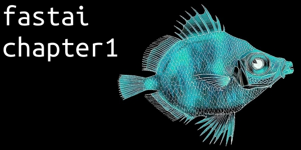
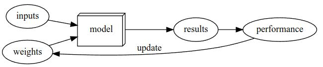
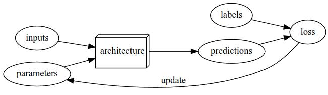

your deep learning journey

Intro
This my summary of chapter 1 from the book “Deep Learning for Coders with fastai & PyTorch”.
- questions - question about the chapter
- key concepts - summarized key concepts of the chapter
- Homepage: fastai hompage
- Online Book: fastai online book
- Author: jermey howard
- Author: sylvain gugger
Questions
Questions about the chapter.
Code
Code from this chapter.
Code - Chapter 1 - Your deep learning journey - Is this a cat
Key Concepts
Summarized key concepts ot this chapter.
What is machine learning
The idea is instead of telling the computer the exact steps required to solve a problem, show it examples of the problem to solve, and let it figure out how to solve it itself.

- weight assignment
- automatic means of testing the effectiveness
- current weight assignment in terms of actual performance
- mechanism for altering the weight assignment so as to maximize the performance
What is deep learning
Deep learning is specialty within machine learning that uses neural networks with multiple layers.
Why are neural network great for machine / deep learning
- If you regard a neural network as a mathematical function, it turns out to be function that ist extremely flexible depending on its weights.
- A mathematical proof called the universal approximation theorem shows that this function can solve any problem to any level of accuracy.
- In neural network we can use stochastic gradient descent (SGD).
- To determine the actual performance we can define our models performance as its accuracy at predicting the correct answers.
Modern Deep Learning Loop and Jargon

- Architecture The template of the model that we trying to fit, the actual mathematical function that we’re passing the input data and parameters to.
- Model The combination of the architecture with a particular set of parameters.
- Label The data that we trying to predict.
- Parameters The values in the model that change what task it can do and that are updated through model training
- Predictions The results of the model are called predictions. The predictions are calculated from the independent variable, which is the data not including the labels.
- Loss Loss ist the measurement of the performance. The loss depends not only on the predictions, but also on the correct labels.
- Fit / Train Update the parameters of the model such that the predictions of the model using the input data match the target labels.
- Epoch One complete pass through the input data (training set)
Limitations Inherent to Machine Learning
- A model cannot be created without data.
- A model can learn to operate on only the patterns seen in the input data used to train it.
- This learning approach creates only predictions, not recommended actions.
- It’s not enough to just have examples of input data, we need labels for that data too.
Classification and Regression
- Classification A classification model is one that attempts to predict a class, or category. That is, it’s predicting from a number of discrete possibilities.
- Regression A regression model is one that attempts to predict one or more numeric quantities, such as a temperature or a location.
What is Overfitting
Overfitting is the single most important and challenging issue when training for all machine learning. Training a model in such a way that it remembers specific features of the input data, rather than generalizing well to data not seen during training.
Training Set, Validation Sets and Test Sets
- Training set The data used for fitting the model, does not include any data from the validation set. (If there is enough data 80% is used for training)
- Validation set A set of data held out from training, used only for measuring how good the model is. (If there is enough data 20% is used for validation)
- Test set As we hold the validation data back from the training process, we can hold back a test set data even from ourselves. It cannot be used to improve the model, it can only be used to evaluate the model at the very end. (Take out some data for testing and split the rest to 80% for training and 20% for validation)
For decision makers it is important to unsure to rally understand what a test and validation set is. For example you should never give out all the data to an external vender. Always hold some test data (test set) for your own validation of the final model.
What is a CNN (Convolutional neural network)
Convolutional neural network, a type of neural network that works particularly well for computer vision tasks.
Pertrained model and Fine-tuning
Pretrained model A pretrained model has weights already been trained on some other dataset. You should nearly always use a pretrained model, because it means the your model, before you’ve even shown it any of your data, is already very capable. For instance. parts of pretrained models will handle edge, gradient, and color detection. which are needed for many tasks.
Transfer learning Using a pretrained model for a task different to what it was originally trained for.
Fine-tuning A transfer learning technique where the parameters of a pretrained model are updated by training for additional epochs using a different task that used for pretraining.
Using a pretrained model is the most important method we have to allow us to train more accurate models, more quickly, with less data, and less time and money.